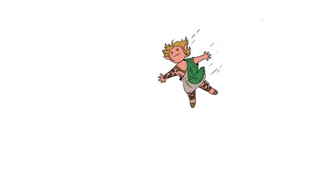

Spring 2 3
Tears of the kingdom comes out this year
this is my span 1
this is my span 2
this is my span 3
Let's goooooooo
this is a p tag
Images

Food
Links
External Link
Facebook
Realtive link
Link to about page
Anchor Link
Go to Top of Page
Anchor Link
Email